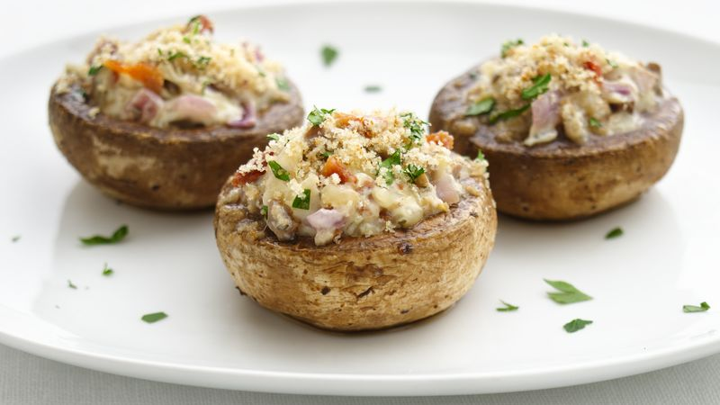

Cheesy Bacon Stuffed Mushrooms

Description
These little bites of joy are like tiny flavor bombs that explode in your mouth! Juicy mushrooms, stuffed to the brim with creamy cheese and crispy bacon, are a party favorite that disappears faster than you can say "delicious!" They're perfect for game nights, potlucks, or just treating yourself to a mouthwatering indulgence.
Ingredients
- 20 medium-sized white mushrooms
- 1 cup cream cheese, softened
- 1 cup shredded cheddar cheese
- 1/2 cup cooked bacon, crumbled
- 2 cloves garlic, minced
- 1 tablespoon fresh parsley, chopped
- Salt and pepper to taste
- Olive oil for brushing
Steps
- Make the meat sauce.
- Cook the noodles.
- Make the ricotta mixture.
- Layer the lasagna.
- Cover with foil and bake.
- Let the lasagna rest before serving.